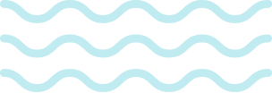

Getting started
Humpback generator is extremely easy to use. Just install it from npm project page and generate a project in a new folder:
npm install -g yo
npm install -g generator-humpback
And then:
mkdir my-project && cd my-project
yo humpback
That’s it!
Why use Humpback?
Let's face it: Drupal development requires several dependencies and they increase if you start thinking about performance: solr, memcached, varnish, etc. Taking time to configure each one of them is tedious and reduces the project time. With Humpback, you won't worry about this and you'll be able to focus in what really matters: your project development.
This tool integrate several utilities that you can use in your project, among them varnish, solr, memcached, ngrok, mailhog, drush, drupal console and some others that will make your life easier when developing with Humpback.
Sounds cool? Give it a try!
Usage
In the generated project, you'll have the necessary documentation to continue your journey. You also can access that documentation in USAGE.md
Where does the name come from?
Docker is a whale, so, we wanted to be a whale too. While researching for whales, we loved the idea of naming our project as Humpback because that's one of the species most seen in our country: Costa Rica.
Special thanks to...
The #Manateam for creating and maintaining Humpback, specially to:
Contributing
Please use the project, fork it, and submit PRs. We are responsive and will review them as soon as possible!